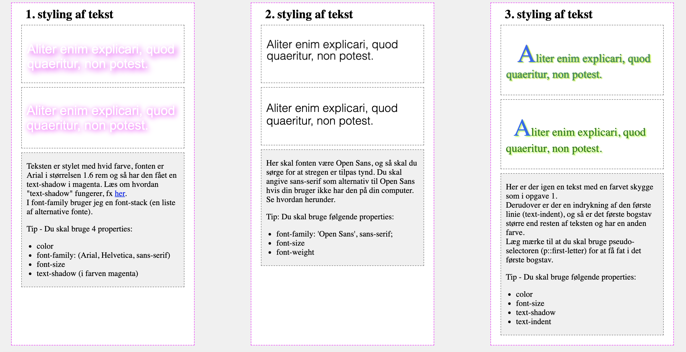

Responsive Web design
Udover at fortsætte med grundlæggende web, var fokuset i dette tema at elementerne skulle være responsive. AKA indholdet skulle kunne dynamisk tilpasse sig til at skærm størrelser.
Splash billedet ovenfor vil tilpasse sig efter skærmstørrelsen. Samtidigt sørge for at figuren bliver i fokus uanset hvilken skærmstørrelse denne side bliver vist i.
Desuden er dette billede indsat gennem CSS i stedet for HTML, hvilket også var noget vi lærte under dette tema.
Andre dele under temaet
Responsive var slut målet på tema 2, men vi var også gennem en del øvelser som skulle hjælpe os med at blive mere komfortable med html og css. En af øverlserne tog os igennem 25 bokse som skulle designes på en bestemt måde. Min løsning kan findes her og ellers kan billedet under give en idé om hvordan det endte ud.
